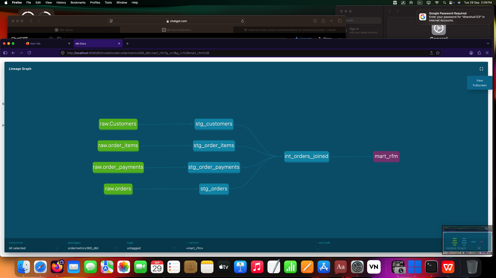
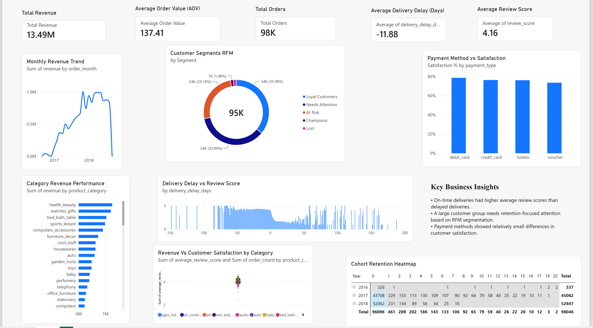
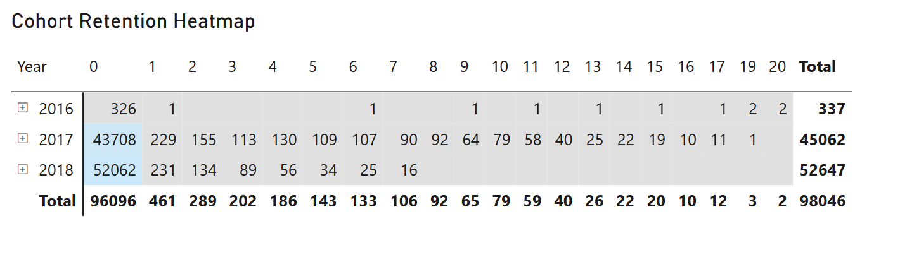

A full-pipeline analysis of 100K+ Brazilian e-commerce orders — from raw data to a tested, documented warehouse, to statistically validated business recommendations.
Leadership at an e-commerce marketplace needs a clear read on business health: which customers actually drive revenue, whether delivery performance is costing them satisfaction, and where operational attention should go first.
This project answers that with a real, end-to-end analytics workflow — not a single chart or a one-off notebook — built the way an analyst would build it inside a company: a modeled warehouse, tested transformations, statistical validation, and a dashboard stakeholders can actually use.
Nine raw Olist tables are staged, tested, and modeled into five business-ready marts using dbt on BigQuery, then analyzed in Python and visualized in Power BI.

Fig. 1 — dbt lineage graph, raw → staging → marts
RFM segmentation shows the "Champions" segment, though a minority of the customer base, accounts for the largest share of total revenue.
Orders delivered late receive measurably lower review scores than on-time orders — and the gap is statistically significant, not random noise.
A chi-square test confirms payment type and customer satisfaction are not independent — certain payment methods correlate with lower reported satisfaction.
Built in Power BI with DAX-driven measures (revenue, AOV, SLA compliance), connected directly to the BigQuery marts.

Fig. 2 — KPI overview & monthly revenue trend

Fig. 3 — Cohort retention heatmap (Matrix visual)
Every relationship reported above was tested, not eyeballed. Delivery delay vs. review score was compared with a Mann-Whitney U test (review scores are ordinal, so a t-test's normality assumption doesn't apply). Payment method vs. satisfaction was tested with a chi-square test of independence. Both returned p-values below 0.05, meaning the patterns are real effects in the data, not sampling noise.
1. Protect high-value segments. Champions represent a small share of customers but a large share of revenue — prioritize retention outreach here first.
2. Fix delivery SLAs on the worst-performing routes. The delivery-satisfaction link is statistically confirmed — this is a lever, not a guess.
3. Investigate payment-method friction. Certain payment types correlate with lower satisfaction independent of delivery — worth a targeted follow-up study.
→ Full memo: BUSINESS_MEMO.md